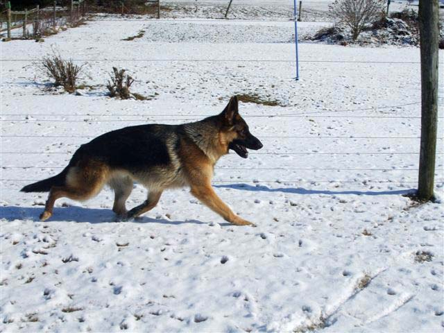
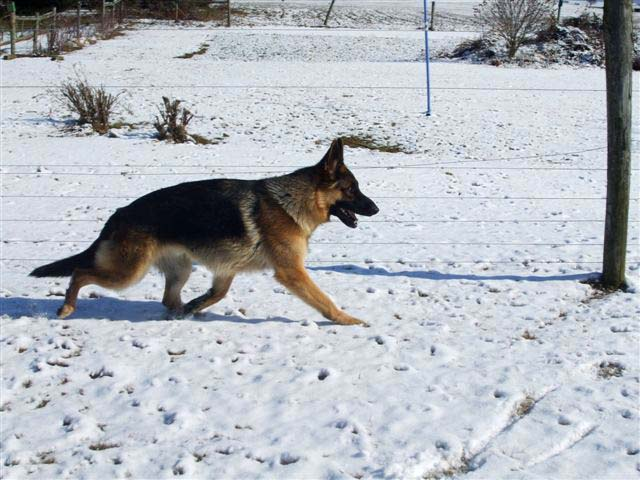

Riker
Nicklaus Georgio
Dam:Nicklaus' Little Miss Sunshine
Sire:Armani Vom Finkenweg
(German import)
Riker is a big bear of a Shepherd with a heart to match. This is the kind of Shepherd we looked far and wide for when we were doing our work with the Assistance Dogs. Soft body language, nice, even ball drive, sweet and affectionate, plus smart and trainable. He is the true: Calm, Trainable, Classic German Shepherd.
The very best of a German/American cross. Beautiful to look at, wonderful to live with, a joy to train.
Riker has OFA good hips and normal elbows, above-average pancreatic function, and has been DNA cleared of degenerative myelopathy.
Our Boys
 
